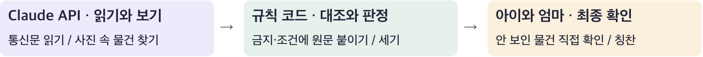

통신문에는 ‘개인 도시락, 간식, 물, 음료수, 멀미약, 비닐 봉투 (장난감 등 불가)’라고 적혀 있다. 가방에 넣을 것과 두고 갈 것이 한 줄에 섞여 있다.
팀이 읽은 통신문 23건에서 준비물을 한 줄로 쓴 19건 중 10건(53%)이 ‘등’으로 끝났다. 아이가 혼자 읽기 어렵고, 엄마는 금지·조건까지 기억해 챙겨야 한다.
아버지 설문에서 준비물 파악·구입은 어머니 담당이 52.3%였다¹. 취학 뒤 어려움 중 숙제 지도·준비물 챙기기는 22.9%였다². 빠뜨리는 빈도는 아직 재지 않았다.
03 서비스 개요
서비스명 · 가방쏙 엄마가 대신 챙기던 가방을 이제 아이가 친구 쏙이와 함께 ‘우리 미션’으로 직접 싼다.
기대 효과 아이는 학교의 조건과 금지를 지키며 스스로 챙기고, 엄마는 확인하고 칭찬한다. 추천은 학교가 지정한 필수품과 구별한다.
이번 범위 가방에 넣기와 귀가 뒤 확인 한 화면까지. 집 안에서 물건 찾기와 쏙이와의 자유 대화는 다음 단계다.
04 서비스 활용 방식
한 장면 · 내일 체험학습인데, 유리병을 챙겨도 될까?
① 엄마가 통신문을 넣는다. 물은 준비물, 유리병은 금지라는 원문을 함께 본다. 행사일과 회신 마감은 엄마가 확인해 달력에 넣는다.
② 아이가 쏙이와 ‘우리 미션’을 시작한다. 추천은 골라 담고 준비물을 펼친다. 유리병이 보이면 ‘이건 두고 가자’. 사진에 안 보인 것은 하나씩 넣으며 직접 확인한다.
③ 아이가 ‘다 챙겼지!’를 엄마에게 보여 준다. 엄마는 대신 가방을 열어 보지 않고 칭찬 스티커를 붙인다. 귀가 뒤에는 가져간 것을 다시 확인할 수 있다.
엘리스 AI 챌린지 2026 · 성인 부문잘챙겨조 · 2 / 2
가방쏙은 어디까지 스스로 판단할까?
05 AI 활용 계획
공개 예시판 브라우저에서 통신문을 규칙으로 읽는다. AI 모델을 호출하지 않으며, 사진 판정은 미리 준비한 고정 결과다.
실제판 · Docker 로컬 Claude API가 통신문의 글·사진을 읽고 준비물 사진에서 보이는 물건을 찾는다. 캘린더 MCP 서버는 일정을 다룬다. 공개 예시판에서는 이 서버를 실행하지 않는다.
MCP에서 확인한 범위 Claude 데스크톱에서 예시 서버의 packing_plan이 가상 통신문의 준비물·금지물을 돌려준 것까지 확인했다. 실제판 서버의 도구 등록은 미확인이다.

같은 통신문 23건에 규칙을 다시 적용한 결과
금지물은 표현을 보완한 뒤 35/43 → 43/43, 오탐 1개였다. ‘등’은 11/11건 찾았다. 준비물은 머리말이 있는 19건에서 114/114개였지만, 머리말 없는 표·학년별 목록 4건은 0/78개였다. AI가 만든 정답표와 느슨하게 대조한 값으로, 새 통신문이나 사진의 정확도가 아니다.
모델은 보고, 규칙은 판단한다. 금지·조건·추천·완료 판정은 근거 문장을 쓰는 규칙이 맡는다(자동 시험 62개). 안 보인 것은 아이가 확인하고, 약은 보호자에게만 보인다. 아이와 AI의 직접 대화·사진 저장·위치 수집은 하지 않는다.
다음 검증 실제 사진 12장 이상에서 금지물을 놓친 수와 잘못 본 수를 따로 잰다. 오류가 많으면 사진보다 하나씩 챙기기를 우선한다.
제작 도구 Claude·GPT로 조사·초안·코드·검토를 보조하고, 쏙이 그림에 이미지 생성 AI를 사용했다. 결과는 팀이 확인했다.
06 핵심 기능 (3가지)
① 통신문을 일정과 준비물로 행사일·회신 마감을 나누고 준비물·금지·조건에 원문을 붙인다. 구글 캘린더에는 일정 작성 링크나 .ics 파일로 내보낸다.
② ‘등’ 뒤에 빠진 준비물 추천 통신문 23건의 유사 사례, Open-Meteo 날씨·미세먼지, 아이 특성을 반영한다. ‘비슷한 알림장 2건에서 봤어요’처럼 이유를 붙여 필수품과 나눈다.
③ 쏙이와 함께하는 ‘우리 미션’ 아이가 직접 사진에 안 보인 물건을 하나씩 확인한다. 다 챙겼을 때만 완료하고, 엄마는 칭찬 스티커로 답한다.
07 차별점
리마인디는 통신문에서 준비물을 뽑고, TurtleWiz는 목록과 사진을 대조한다(스토어 설명 기준). 가방쏙은 ‘왜 두고 가야 하는지’까지 아이에게 보여 준다. 추천과 학교 지시를 섞지 않고, 아이가 직접 고르고 챙긴 결과를 엄마의 칭찬으로 잇는다.